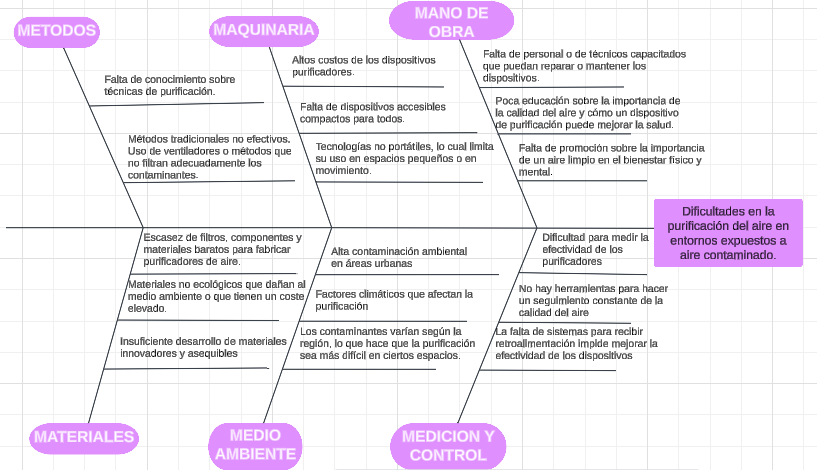
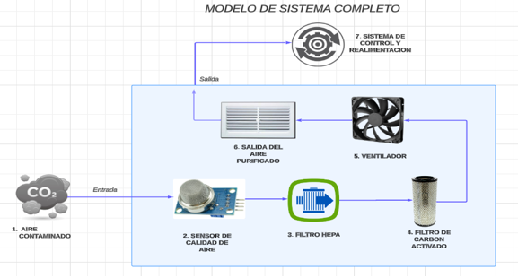

Vital Air consiste en el desarrollo y elaboración de un dispositivo compacto y eficiente diseñado para mejorar la calidad del aire en un área determinada. Este proyecto es ideal para personas que sufren de alergias u otras afecciones respiratorias, así como para las personas que deseen tener un ambiente más puro y evitar la presencia de agentes contaminantes
Idear un dispositivo purificador de aire portátil que permita mejorar la calidad del aire de recintos de mediana afluencia de público, como hogares y establecimientos comerciales.
Objetivos específicos
Mejorar la calidad del aíre reduciendo la presencia de contaminantes y proporcionando un espacio más saludable.
Promover la importancia de la calidad del aire y del cuidado de la salud.
Usar innovación y tecnología avanzada para ofrecer una solución a una problemática que día a día se va intensificando de una manera efectiva y accesible, usando conceptos de ingeniería aplicando un conocimiento científico y tecnológico
1. JUSTIFICACION
La calidad del aire que respiramos día a día es fundamental para la salud por ende un purificador de aire portátil es una solución efectiva ya que provocaría varios beneficios como la mejora de la salud respiratoria eliminando estos contaminantes dañinos para la salud mejorando la calidad de vida además de brindar una excelente portabilidad y uso en muchos entornos proporcionando una solución accesible; así como generar conciencia ambiental dando relevancia a la calidad del aire.
1.1. Situación Problémica
La calidad del aire en entornos cerrados, especialmente en zonas urbanas con altos niveles de contaminación, ha devenido un desafío crítico para la salud pública. En particular, la purificación del aire en hogares y establecimientos con acceso limitado a tecnologías de filtrado sigue siendo un reto relevante. La ausencia de sistemas de purificación de aire accesibles y eficaces se ha convertido en un factor clave que contribuye a una exposición prolongada a contaminantes nocivos. La población más vulnerable, como aquellas personas con enfermedades respiratorias, es particularmente susceptible a los efectos negativos de la mala calidad del aire en recintos cerrados.
Entre las causas principales de esta problemática se identifican varios factores.
• La falta de conocimiento y capacitación sobre métodos efectivos de purificación de aire y la desinformación sobre el uso de dispositivos purificadores contribuyen a la ineficacia de las soluciones disponibles.
• La insuficiencia de recursos en muchas áreas y la limitada disponibilidad de materiales eficientes y ecológicos refuerzan esta brecha en la oferta de soluciones adecuadas. Todo esto se ve afectado por el deficiente diseño y ventilación de muchos espacios cerrados, que no favorecen la circulación de aire limpio.
1.2. Análisis de la situación actual
1.2.1. Estudios preliminares
Actualmente las ciudades de Colombia la calidad del aire se ven afectadas por el tráfico y la industria; esto hace que muchas personas busquen mejorar la calidad del aire en espacios en concreto como oficinas, hogares; siendo el purificador una opción bastante viable para quienes desean usarlo en diferentes espacios o habitaciones.
1.2.2. Instrumentos para investigación y levantamiento de información
Con el fin de justificar nuestra propuesta, adicional las investigaciones preliminares que efectuamos en nuestro entorno, aplicamos una encuesta y consolidamos, a parte de las conclusiones que determinan el problema principal y sus causas en un diagrama Ishikawa (espina de pescado)
1.2.3 Encuesta
Se realizo una encuesta acerca de opiniones generales del proyecto purificador de aire portátil a 20 personas donde logramos conseguir varios datos importantes en el desarrollo del proyecto. Link para ingresar al cuestionario: https://forms.gle/tYHC8ExAo597J5Nw8
1.2.4 Conclusiones de la encuesta
Gracias a la aplicación de la encuesta, logramos recopilar información y opiniones valiosas sobre el purificador de aire portátil, con respuestas en su mayoría positivas que respaldan la relevancia del proyecto. A partir de estos resultados, se pueden extraer las siguientes conclusiones:
Alto interés en el proyecto: La mayoría de los encuestados manifestaron un interés significativo en el purificador de aire, destacando que la salud y la calidad del aire son prioridades en sus vidas. Esto indica que existe un público potencialmente receptivo al producto, especialmente en contextos donde la contaminación es una preocupación.
Preferencias en características y funciones: Los datos recopilados permiten identificar y priorizar las características y funciones que los usuarios consideran más importantes en un purificador de aire. Este conocimiento permitirá orientar el desarrollo del producto hacia las necesidades específicas del público.
Aceptación de un diseño portátil: La preferencia por un diseño portátil sugiere que muchos usuarios buscan dispositivos fáciles de mover o instalar en distintos entornos, como en el hogar, la oficina o incluso para viajes. Esto refuerza la viabilidad de un diseño compacto y ligero.
1.2.5 Diagrama espina de pescado

2. MARCO TEORICO CONCEPTUAL
2.1 Conceptos y terminologia asociada con el proyecto
Calidad del aire: el grado en el que el medio aéreo se encuentra libre de sustancias contaminantes.
Contaminantes: sustancia que se encuentra en un medio al cual no pertenece o que lo hace a niveles que pueden causar efectos (adversos) para la salud o el medio ambiente.
Filtros: Material o dispositivo que permite que determinadas sustancias pasen a través de él mientras que a otras sustancias las mantiene afuera.
Ingeniería Mecatrónica: es una disciplina multidisciplinaria que combina conocimientos de la ingeniería mecánica, electrónica, informática, sistemas y redes de control para el diseño y análisis de productos.
Ingeniería química: estudia los materiales para después transformarlos en productos de consumo.
Procesos: un proceso consiste en un conjunto secuencial de acciones ejecutadas para alcanzar un determinado objetivo.
Proyecto: hace referencia a la planificación o concreción de un conjunto de acciones que se van a llevar a cabo y un conjunto de recursos que se van a usar para conseguir un fin determinado, unos objetivos concretos.
Purificación de aire: consiste en eliminar los elementos contaminantes que se encuentran en suspensión, como pueden ser los tóxicos, el humo y las partículas presentes en el aire.
Sensores: herramientas que detectan y responden a algún tipo de información del entorno físico.
2.2 Normativa aplicable al proyecto
Para llevar a cabo un proyecto de un purificador de aire portátil es necesario tener en cuenta varias normativas decretadas por el gobierno de colombiano que regulan tanto la calidad del aire como el diseño y operación del proyecto.
• Resolución 2254 de 2017: adopta la norma de calidad del aire y establece los niveles permisibles de contaminantes en el aire y que estos cumplan con los estándares de calidad.
• Resolución 0634 de 2022: esta normativa se relaciona con la regulación de la calidad del aire que incluyen lineamientos sobre el uso de tecnologías para el proceso de purificación del aire.
• Manual de diseño de sistemas de vigilancia de la calidad del aire: este manual proporciona varios lineamientos técnicos para el diseño y los sistemas que monitorean la calidad del aire.
• Resolución 650 del 2010 y la resolución 2154 del 2010: que adopta y ajusta el protocolo para el monitoreo y seguimiento de la calidad del aire.
• Resolución 601 del 2006: se establece la norma de calidad del aire o nivel de inmisión para todo el territorio nacional.
• Norma EN 1822: norma europea que establece la clasificación y prueba de los filtros de aire incluyendo los HEPA que son la base del purificador.
• Norma ISO 16890: establece un sistema de clasificación y prueba para los filtros de aire que se utilizan en sistemas de ventilación general.
2.3 Investigaciones previas sobre el purificacion de aire
El desarrollo de purificadores de aire portátiles ha sido impulsado por la creciente preocupación sobre la calidad del aire y sus efectos en la salud, especialmente en áreas urbanas con altos niveles de contaminación. Se han realizado investigaciones previas que se han centrado en evaluar la eficiencia de estos dispositivos, en identificar los elementos contaminantes que pueden eliminar y en optimizar sus diseños para mejorar su accesibilidad y funcionalidad en entornos variados.
• Eficiencia de filtros HEPA en múltiples dispositivos, se enfoca en evaluar la efectividad de los filtros que son ampliamente utilizados en purificadores de aire debido a su capacidad para capturar partículas finas y mejorar significativamente la calidad del aire en ambientes cerrados.
• Uso de sensores que monitorean los niveles de contaminación que permiten ajustar los niveles de filtración y optimizar la eficiencia energética.
• Filtro carbón activado bastante utilizados en purificadores de aire gracias a su alta capacidad de filtración tanto de partículas como de olores.
Areas de aplicacion del purificador de aire
Los purificadores de aire portátiles se han convertido en una herramienta valiosa en la lucha contra la contaminación del aire en espacios cerrados, donde los niveles de contaminantes suelen ser más altos que en exteriores. A continuación, se describen las áreas de aplicación para estos dispositivos y las necesidades específicas que satisfacen en cada entorno.
1. Oficinas y Espacios de Trabajo: Las oficinas representan uno de los entornos de mayor relevancia para los purificadores de aire. La acumulación de partículas en suspensión, polvo y compuestos orgánicos volátiles puede afectar la calidad del aire interior, causando problemas respiratorios y alergias. La presencia de purificadores de aire portátiles en estos espacios ayuda a reducir la concentración de estos contaminantes, promoviendo un ambiente de trabajo más saludable.
2. Hogares y Espacios Residenciales: En el hogar, los purificadores de aire desempeñan un papel fundamental al reducir la exposición a alérgenos (como polen y ácaros), contaminantes domésticos y humo de tabaco. Además, ayudan a mejorar la calidad del aire para personas con afecciones respiratorias como asma o alergias, al reducir las partículas irritantes en el ambiente. Dado que los hogares son espacios donde las personas pasan la mayor parte de su tiempo, contar con un purificador de aire portátil permite adaptarse a diferentes habitaciones y necesidades específicas, como dormitorios, cocinas y salas de estar.
3. ENTORNO ACTUAL
Teniendo en cuenta el entorno actual, el mercado de los purificadores de aire ha crecido significativamente en los últimos años impulsado principalmente por la contaminación atmosférica en ciudades con alta densidad de población y tráfico, convirtiéndose en una problemática grave actualmente. Estos problemas ambientales incrementan la probabilidad de adquirir enfermedades respiratorias aumentando la preocupación de la salud y bienestar de las personas.
En cuento a usuarios y situaciones actuales en el mercado se puede clasificar en dos grupos:
• Hogares: donde la demanda de este tipo de productos ha crecido entre las personas que buscan una mejor calidad de vida en sus espacios tanto personales, especialmente con familias con niños, ancianos y personas con problemas respiratorios.
• Espacios comerciales: la purificación del aire se ha vuelto prioridad para crear ambientes seguros en distintos espacios, negocios y demás ambientes comerciales.
4. COSTOS APROXIMADOS
Teniendo en cuenta los materiales:
• Filtro HEPA: puede retirar la mayoría de las partículas perjudiciales, incluyendo las esporas de moho, el polvo, los ácaros del polvo, la caspa de mascotas y otros alergenos irritantes del aire, con un costo aproximado $60.000.
• Ventilador: para mover el aire a través del filtro, costo estimado de $45.000.
• Fuente de alimentación: puede ser un adaptador de corriente o baterías recargables, costo estimado $30.000.
• Componentes eléctricos: como cables, interruptores, conectores entre otros, costo estimado de $30.000.
• Controlador de velocidad: para controlar las velocidades del purificador, costo aprox $65.000.
• Sensor de calidad de aire: para medir la calidad del aire y ajustar el funcionamiento del purificador, costro aprox $198.000.
Estos costos se basan en materiales teniendo en cuenta que aún no se tiene establecido por completo, dando un total aproximado de $428.000.
5. DISIPLINAS QUE INTERVIENEN EN EL PROYECTO
El desarrollo de un purificador de aire portátil requiere un enfoque multidisciplinario que permita integrar distintos conocimientos y tecnologías. En este proyecto participan principalmente tres ramas de la ingeniería: ingeniería química, ingeniería mecatrónica e ingeniería eléctrica, cada una aportando aspectos esenciales para lograr un diseño eficiente y funcional.
1. Ingeniería Química: La ingeniería química es fundamental para la selección y optimización de los materiales de filtración, tales como filtros HEPA, carbón activado y otras tecnologías avanzadas de purificación.
2. Ingeniería Mecatrónica: La ingeniería mecatrónica permite integrar sistemas electrónicos y mecánicos en un diseño compacto y portátil. Esta disciplina también interviene en la programación de los controles automatizados que permiten al purificador ajustar su funcionamiento en respuesta a cambios en la calidad del aire.
3. Ingeniería Eléctrica: La ingeniería eléctrica se encarga de los sistemas de energía y control, garantizando que el purificador funcione eficientemente con un bajo consumo energético.
6. PROPUESTA
6.1 Características
• Operación Silenciosa: Diseñado para funcionar de manera discreta, el purificador cuenta con un sistema de operación silenciosa, ideal para su uso en ambientes como oficinas, hogares y dormitorios, sin causar molestias.
• Diseño Compacto y Ligero: Su estructura compacta y peso ligero facilitan el transporte, permitiendo que el usuario lo mueva fácilmente entre diferentes espacios y lo utilice en entornos variados.
• Desarrollo Multidisciplinario: Este proyecto se beneficia de conocimientos integrados de diversas ingenierías para lograr un diseño avanzado, funcional y sostenible.
• Filtración Multietapa: Equipado con un sistema de filtración de varias etapas, incluyendo filtros HEPA y de carbón activado, para capturar una amplia gama de contaminantes como partículas finas, alérgenos y olores.
6.2 Impacto que generaria el proyecto
El proyecto generaría un impacto en aspectos como:
• En el medio ambiente: pueden contribuir a un ambiente más limpio tanto para las personas como para los ecosistemas, a menudo se ven afectados por culpa de la contaminación en el aire que afecta a muchos grupos de especies hasta el punto de ser la razón por la cual muchas especies se ven extinción o en riesgo.
• En el área de la salud: un impacto significativo se aplicaría en el área de la salud ya que causaría una reducción en enfermedades respiratorias, infecciones y la mejora del bienestar en general por ende la mejora de la calidad de vida de las personas.
• En el ámbito educativo: promover la educación acerca de generar conciencia sobre la importancia de la calidad del aire y las practicas sostenibles y adoptar hábitos ecológicos.
6.3 Esquema o modelo del proyecto
En la siguiente imagen se muestra el modelo del proceso que realiza el purificador

1. ENTRADA DEL AIRE CONTAMINADO: el aire del entorno es absorbido a través de una rejilla ubicada en la parte lateral del dispositivo. La rejilla de entrada está protegida por un filtro de malla que retiene partículas grandes evitando que ingresen al sistema principal.
2. SENSOR DE CALIDAD DE AIRE (DETECCION DE CONTAMIANTES): después de la entrada el aire pasa por un sensor de calidad que mide la concentración de partículas y contaminantes proporcionando un análisis más amplio de la calidad de aire.
3. FILTRO HEPA (CAPTURA DE PARTICULAS FINAS): Una vez pasado por el sensor, entra por el filtro HEPA (High Efficiency Particulate Air), es un filtro que está diseñado para capturar hasta el 99.97% de las partículas siendo uno de los componentes más importantes del sistema.
4. FILTRO DE CARBON ACTIVADO (ABSORCION DE OLORES Y GASES): este filtro es el encargado de absorber olores, gases y compuestos orgánicos volátiles presentes en el aire, esta etapa es esencial para la neutralización de olores como el humo de cigarro entre otros olores que puedan encontrarse.
5. VENTILADOR (REGULACION DEL FLUJO DE AIRE): El aire ya purificado es impulsado gracias al ventilador que ajusta su velocidad, este ventilador es responsable de mantener un flujo de aire constante
6. SALIDA DEL AIRE PURIFICADO: El aire purificado sale por una rejilla de salida en la parte superior del dispositivo, distribuyéndose de manera uniforme en el espacio.
7. SISTEMA DE CONTROL Y RETROALIMNTACION: El proceso realizado es monitoreado por un sistema de control que recibe las lecturas del sensor y ajusta automáticamente el ventilador.
7. REFERENCIAS BIBLIOGRAFICAS
• Philips. (2022, 2 junio). Qué es un purificador de aire. https://www.philips.es/c-e/ho/articulos/cuidado-del-aire/consejos-para-el-cuidado-del-aire/que-es-un-purificador-de-aire.html
• Beneficios para la salud respiratoria - Google Search. (s. f.). https://www.google.com/search?client=opera-gx&sca_esv=3c101e1f6792e668&sxsrf= &biw=1325&bih=649&dpr=1
• Qué es la Calidad del Aire: Importancia y Medición. (2024, 26 junio). Lafarge Holcim España. https://www.holcim.es/que-es-la-calidad-del-aire-importancia-y-medicion
• Filtros HEPA, ¿qué son y cómo funcionan? (2021, 16 febrero). https://www.airtecnics.com/es/noticias/filtros-hepa-que-son-y-como-funcionan
• Aguafría, E. (2023, 22 marzo). Todo sobre los filtros de carbón activado - Fuentes de agua. Aguafría. https://www.aguafria.es/blog/todo-sobre-los-filtros-de-carbon-activado/?srsltid=AfmBOoqrzMte6ixaQf035i7pXoBAVrNyixjdXTk5-xTLB3n84ScFUjim
• Capital Area Council of Governments. (s. f.). Ciencia Ciudadana/Sensores de calidad del aire - Air Central Texas - Spanish. Spanish. https://aircentraltexas.org/es/acerca-de-act/la-semana-de-la-calidad-del-aire/ciencia-ciudadana-sensores-de-calidad-del-aire#:~:text=Los%20sensores%20de%20calidad%20del%20aire%20son%20dispositivos%20que%20detectan,se%20pueden%20mover%20con%20frecuencia.